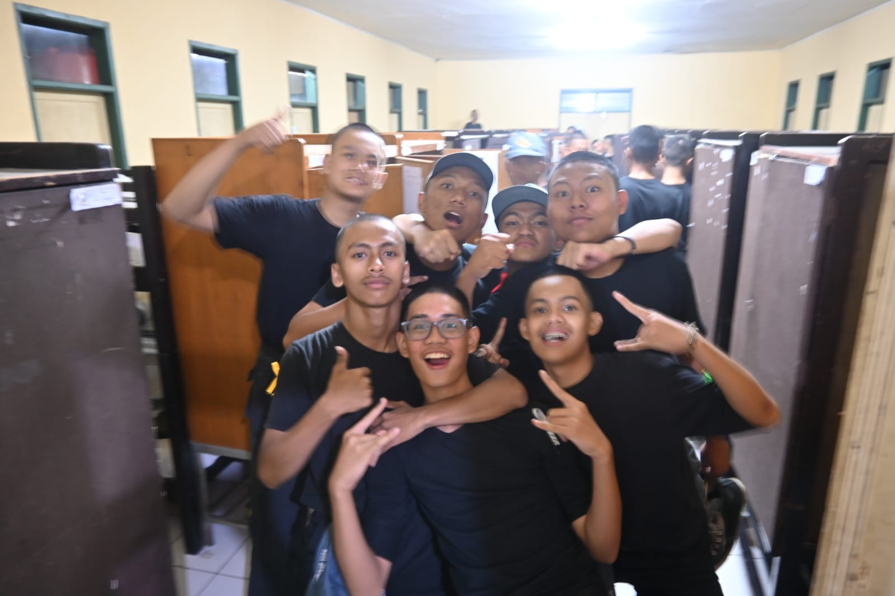
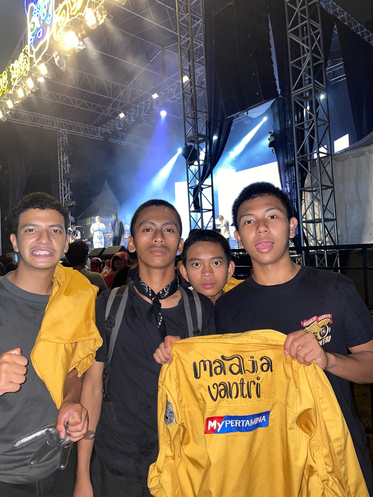

LDKS
LDKS adalah singkatan dari Latihan Dasar Kepemimpinan Siswa, yaitu pelatihan yang diselenggarakan di sekolah untuk meningkatkan kemampuan kepemimpinan siswa. Kegiatan ini bertujuan untuk menanamkan jiwa kepemimpinan, kemandirian, dan tanggung jawab, serta melatih keterampilan seperti kerja sama tim dan komunikasi, yang berguna bagi siswa yang akan menjadi pengurus organisasi sekolah seperti OSIS.

Sumber:https://www.detik.com/edu/detikpedia/d-6817900/ldks-adalah-pengertian-manfaat-dan-materi-yang-diberikan
Baca Selengkapnya
Festival Budaya
Festival budaya adalah acara yang merayakan dan melestarikan tradisi, kepercayaan, dan nilai-nilai suatu komunitas atau kelompok etnis melalui berbagai kegiatan seperti musik, tarian, pameran seni, dan upacara adat.

Sumber:https://disbud.bulelengkab.go.id/informasi/detail/artikel/festival-budaya-sebagai-sarana-pelestarian-budaya-99
Baca Selengkapnya
Pemilihan Calon Ketua Angkatan 3'2027
Pemilihan Calon Ketua Angkatan 3'2027 SMAN 3 Bandung merupakan kegiatan demokratis yang bertujuan untuk memilih pemimpin angkatan yang mampu mewakili, mengkoordinasikan, serta mempererat solidaritas antara siswa angkatan 2027.
Sumber:Instagram @wargatiga2027
Baca Selengkapnya